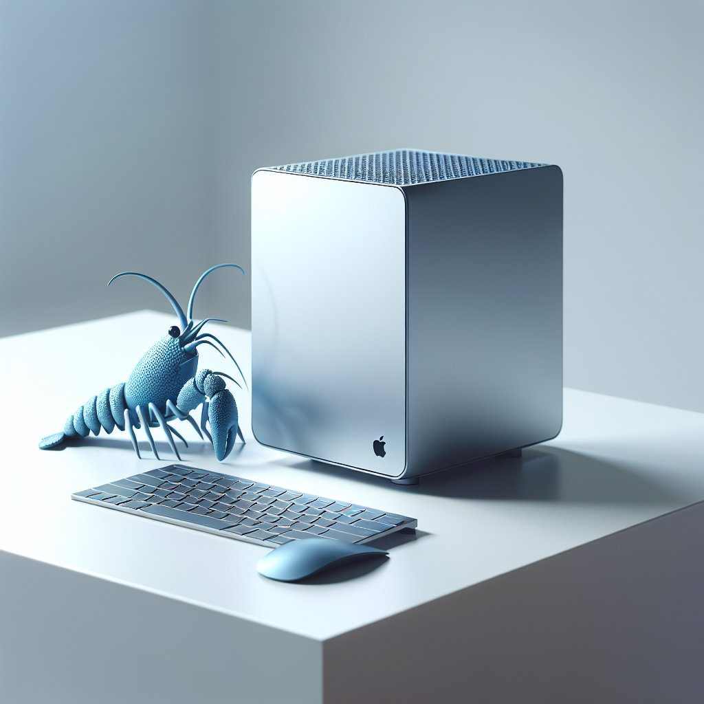

專屬硬體設備選購
我們為 OpenCRAW 挑選並預裝了最穩定的 Apple 晶片平台，
真正的「買回家，插電即用」。
Apple Silicon
M1 & M2 Optimized

小龍蝦 (Mac Mini M1)
$9,500 / 設備單價
Apple M1 8核心晶片
8GB 統一記憶體
256GB 超高速 SSD
適用方案：經濟版、商務版

大龍蝦 (Mac Mini M2)
$13,000 / 設備單價
Apple M2 進階效能晶片
16GB 統一記憶體 (推論專用)
512GB 超大容量儲存
⚠️ 豪華版 HA 架構唯一指定
* 硬體設備享 Apple 原廠保固。本公司負責系統預裝與資安防火牆深度優化。